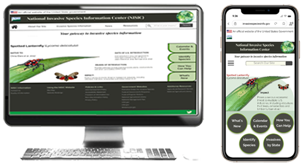

Ferst Readers
Nonprofit organization
website and mobile app re-design
Re-design of the Ferst Readers website and mobile app. Ferst Readers is a nonprofit
organization promoting early childhood literacy from birth to age 5, and has resulted
in higher literacy rates in participating communities.
Our team first conducted research though interviewing a stakeholder and others who currently
donate to nonprofits,discovering their frustrations and mistrusts with nonprofits, as well as
what makes them consider nonprofits trust-worthy enough to donate. We re-designed the Ferst
Readers website to give the donor a more trustworthy, streamlined and efficient way to donate
to Ferst Readers.
NISIC
Deskstop and Mobile app redesign
Re-design of the National Invasive Species Information Center (NISIC)
website and mobile app. A team brainstorming project, accumulating ideas
through conducting individual research through user testing of the current
NISIC website, cultivating ideas from our research to re-design the current
NISIC website and mobile app to create individual website and app re-designs
allowing for a user-friendly, enhanced and productive experience.
